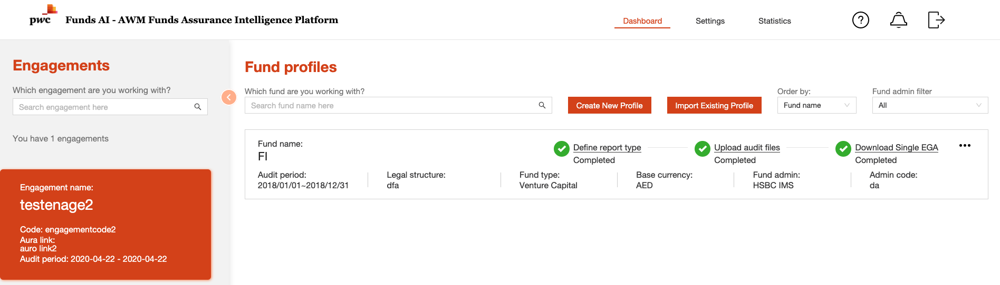
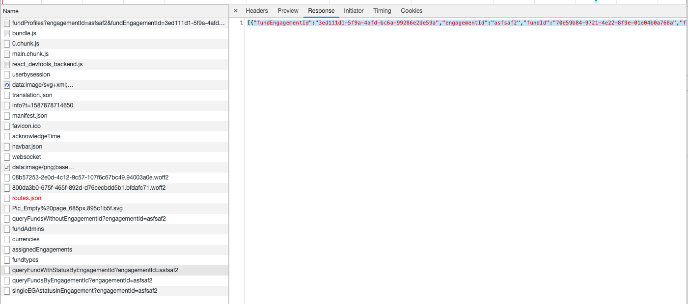

Store file in database
Store file in database:
It’s quiet common that applicaiton will use database blob to store long contents input or files.
For our AWM project do the same way, but when we query the file extaction status in home page:

We just want a simple answer that if the user upload files are processed:

with query result from backend:
[
{
"fundEngagementId": "3ed111d1-5f9a-4afd-bc6a-99286e2de59a",
"engagementId": "asfsaf2",
"fundId": "70e59b84-9721-4e22-8f9e-01e04b0a768a",
"fundName": "FI",
"definedReportTypeNumber": 15,
"reportUploadedNumber": 15,
"hasEgaDownloaded": true
}
]so everything looks as expected.
Issue:
But as we look the database query log in backend, we will find:
[debug] s.j.J.statement - Preparing statement: select x2.`id`, x2.`fund_engagement_id`, x2.`extraction_status`,
x2.`upload_file_status`, x2.`upload_file_content`, x2.`selected`, x3.`display`, x4.`display`, x2.`createby`,
x2.`createdatetime`, x2.`modifyby`, x2.`modifydatetime` from `fund_engagement_report_type_selection` x2,
`fund_engagement` x5, `funds` x6, `fund_admin` x7, `sheettypes_reporttypes_map` x8, `sheet_types` x3, `report_types`
x4 where ((((((x2.`fund_engagement_id` = x5.`id`) and (x2.`fund_engagement_id` = '3ed111d1-5f9a-4afd-bc6a-99286e2de59a'))
and (x5.`fundid` = x6.`id`)) and (x6.`fund_admin_id` = x7.`id`)) and (x2.`sheettypes_reporttypes_map_id` = x8.`id`))
and (x8.`sheettypeid` = x3.`id`)) and (x8.`reporttypeid` = x4.`id`)The log shows there will have query for “upload_file_content”. This field is a blob file:
create table `fund_engagement_report_type_selection`(
`id` varchar(128) NOT NULL,
`sheettypes_reporttypes_map_id` varchar(128) NOT NULL,
...
`modifyby` VARCHAR(128) NULL,
`modifydatetime` TIMESTAMP NULL,
`selected` boolean NOT NULL DEFAULT FALSE,
`upload_file_content` MEDIUMBLOB NULL,
`extraction_file_content` MEDIUMBLOB NULL,
...
);In this table, we store the file content in field “upload_file_content”.
What’s happend:
There is an existed api to query user’s input:
override def lookupSelectionWithDisplay(fundEngagementId: String): Future[Seq[FundEngagementReportTypeSelectionWithName]] = {
val sql = for (((((((selection, fundEngagement), funds), fundAdmin), sheetReportMap), sheetTypes), reportTypes)
<- FundEngagementReportTypeSelection join FundEngagement on ((left, right) => left.fundEngagementId === right.id && left.fundEngagementId === fundEngagementId)
join Funds on ((left, right) => left._2.fundid === right.id)
join FundAdmin on ((left, right) => left._2.fundAdminId === right.id)
join SheettypesReporttypesMap on (_._1._1._1.sheettypesReporttypesMapId === _.id)
join SheetTypes on ((left, right) => left._2.sheettypeid === right.id)
join ReportTypes on ((left, right) => left._1._2.reporttypeid === right.id))
yield (selection.id, selection.fundEngagementId, selection.extractionStatus, selection.uploadFileStatus ,selection.uploadFileContent, selection.selected, sheetTypes.display, reportTypes.display,
selection.createby, selection.createdatetime, selection.modifyby, selection.modifydatetime)
db.run(sql.result).map(res => res.map(tup => FundEngagementReportTypeSelectionWithName(tup._1, tup._2, tup._3, tup._4, tup._5 match {
case Some(value) => Some(new String(value.toString))
case None => None
}, tup._6, tup._7,tup._8, tup._9, tup._10, tup._11, tup._12)))
}The api is as expected.
But when another person implements another api to query the extraction result of user input files, the person “reuse” the api. Then the issue happens.
How to resolve:
-
Change the query.
-
Change the database definition.